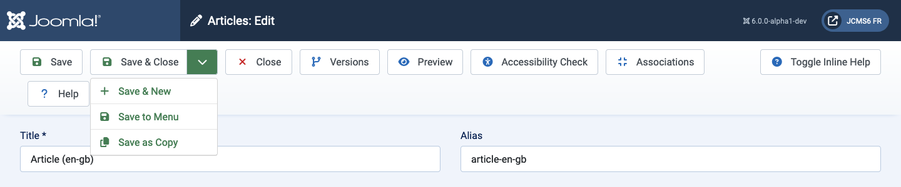
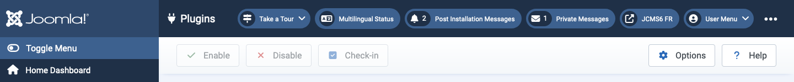

Toolbars are present on almost all Joomla! Administrator pages. Dashboards are the notable exceptions. They are located at the top of the page immediately beneath the Title bar containing the name of the page and various Status modules such as the Joomla Version and Front page link.
Each page has a complement of Buttons suited to its purpose. Some are common, such as Save, Cancel and Help. Others are rare, such as Rebuild and Delete Orphans. Some are always active. Others are inactive (grey) until a list item checkbox is selected.
If there are a lot of buttons they will wrap onto two rows. Some examples:

The buttons without a down chevron all operate immediately. So Save will save the page and return with green confirmation message or a red error message. Note that, in most cases, the Cancel button will close an edit page without saving any changes.
The buttons with a down chevron icon have two functions. Select the icon and a list will appear, as shown in the screenshot above. That allows selection of alternative actions. Select the button and that action is taken. So Save & Close in the example screenshot.
Some buttons only appear in certain circumstances. For example, the Accessibility Check button only appears if the System - Joomla Accessibility Checker plugin is enabled. And Associations only appears on multilingual sites.
Please explore what the various buttons do!

In this Toolbar example the buttons are grey to indicate they are inactive. They become bright and active when a Plugin item checkbox is checked to make it ready to Enable, Disable or Check-in. Several list items can be selected for simultaneous action, which is the main purpose of these Toolbar buttons. Individual items can be processed with the icons in each row (not shown).